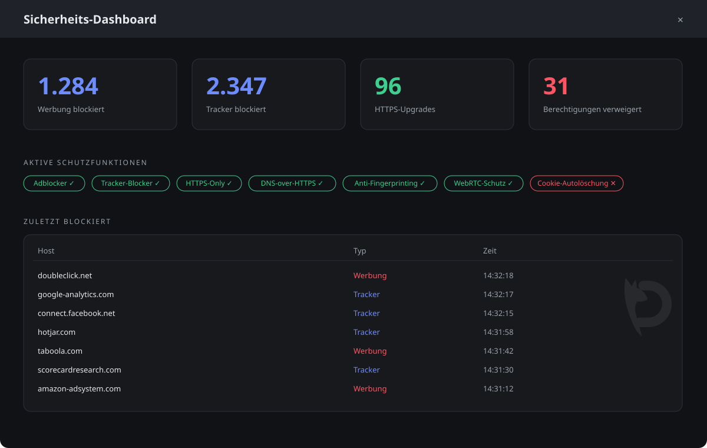
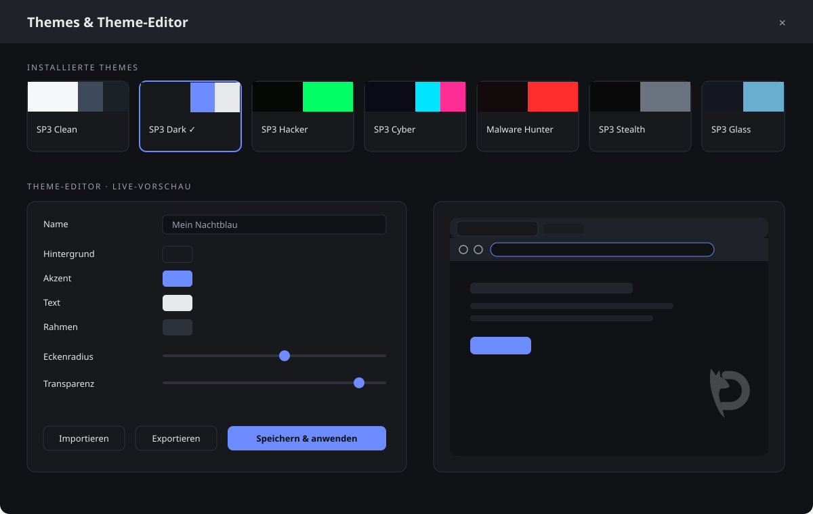

Adblocker, Tracker-Blocker, HTTPS-Only und verschlüsseltes DNS laufen ab dem ersten Start. Ohne Erweiterungen, ohne Konfiguration.

Jede blockierte Anfrage, jedes HTTPS-Upgrade, jede verweigerte Berechtigung. Live und nachvollziehbar.
Jeder Container bekommt eine eigene Cookie-Welt. Temporäre Container verschwinden beim Schließen restlos.
DNS-Anfragen verschlüsselt zu Cloudflare, Quad9 oder Mullvad. Ohne Klartext-Fallback.
Canvas-Rauschen, generischer User-Agent und WebRTC-Leak-Schutz erschweren Wiedererkennung.
Quelloffen unter MIT. Jede Schutzfunktion ist im Code nachlesbar.
Passwörter liegen verschlüsselt über den Schlüsselbund deines Betriebssystems. Nie im Klartext.
Farben, Schriften, Radius, Transparenz und Animationen: Der Theme-Editor ändert alles live, exportiert als JSON und importiert Themes aus der Community.
Verity CleanMinimalistisch, hell
Verity DarkDer Standard
Verity HackerTerminal-Look
Verity CyberDunkel mit Neon
Verity Malware HunterSecurity-Fokus
Verity StealthMaximale Ruhe
Verity GlassTransparente Glasoptik

Drei Bereiche: Netzwerk, Inhalte, Daten. Jede Funktion ist in der Sicherheitsdokumentation im Detail beschrieben.
Installer (NSIS) mit automatischen Updates über GitHub Releases. Windows 10 und neuer, 64-Bit.
Download